Decision Trees
analyses: Decision Trees
Data preprocessing:
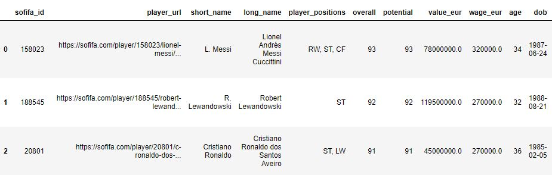This data was obtained from kaggle which has the details of the stats of all players. The stats where generated from the game EA FIFA. There are a wide range of stats and even the minute details are specified. We shall go through the raw data and remove some columns. We shall only keep the columns that will be usefull for us to classify the players into different positions.
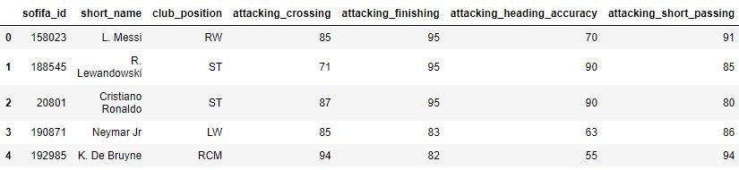After cleaning we will obtain a dataset like this, then we can perform further analysis and use our models on this data
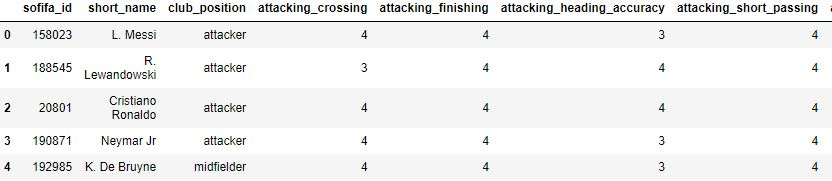We have used the clean FIFA data and discretized the columns, to check if it has an effect on the results for decision trees.
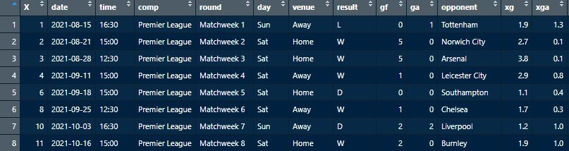This dataset contains details of all matches that have taken place in the premier league 2020-21 season and half of the matches from the 2021-22 season. We will be focussing on the 2020-2021 season.
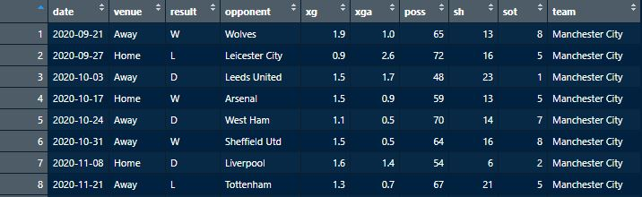After going through the dataset some columns which where not so important, like the day the match took place, the time it took place and some other factors like penalty kicks and free kicks which are less significant in predicting the outcome are removed. Once we do that we will get an output dataset like the one shown above.
Coding:
Decision Trees in Python
Decision Trees in R
Results:
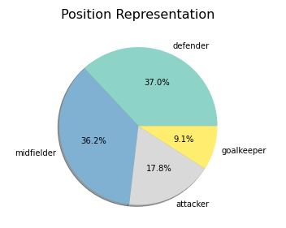We used pie chart to explore the percentage representation of positions in the dataset. Midfielders and defenders have the most representation. This is expected given Midfielders play various roles in football such as attacking and defending roles, and defenders have many roles as well like wing backs, center backs. Goalkeepers and Attackers were the least represented.
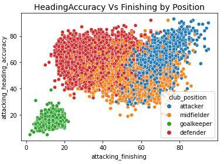Heading accuracy and finishing are skills which are the speciality of attckers. These features may be important for opur model in determing the posiotions. We can see that clear clusters are being formed, so this should help the performance of our model.
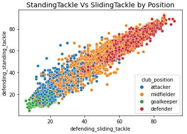StandingTackle and SlidingTackle are skills which are the speciality of defenders. We can see that clear clusters are being formed, so these features can help boost the performance of our model.
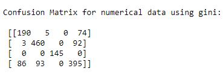This is the confusion matrix we obtained after running our decision tree model
We got an accuracy of 77.12%
This is the confusion matrix we obtained after running our decision tree model using criterion as entropy
We got an accuracy of 77.77%
This is the confusion matrix we obtained after running our decision tree model on the discretized dataset
We got an accuracy of 73.56%
This image is a visualization for the premier league 2020-2021 season. It shows the no.of wins by each team in decreasing order.
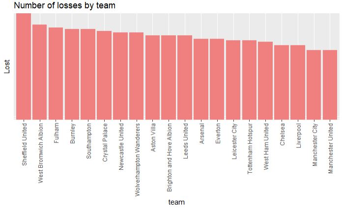This image shows the number of losses by each team.
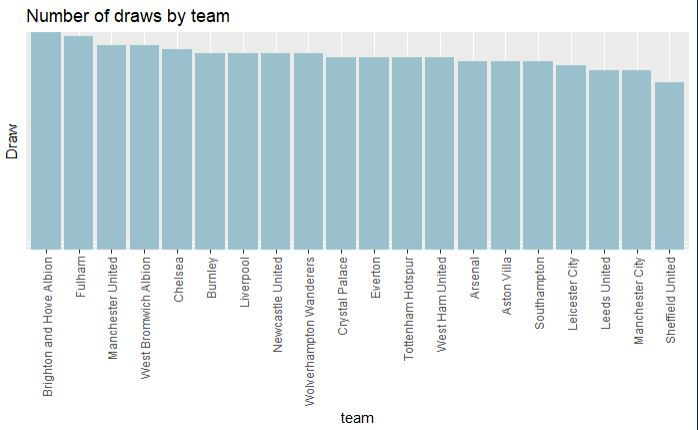This image shows the number of draws by each team.
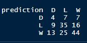This is the confusion matrix we obtained after running our decision tree model.
We got an accuracy of 51.87%
Conclusion:
From the results on the FIFA data we can see that our model accuracy was in the range of 70-80%. This can be expected because the stats of wingback defenders and defensive midfielders might be similar and the stats of attackers and attacking midfielders can be similar.
We can see that the results does not vary much when we use gini or entropy. Gini criterion is much faster as it is less computatiuonally expensive. with entropy we got a slightly better result, but it seems to be not worth it as it uses more time in computing.
Looking at the premier league season data results we can observe that we got a low accuracy of 52%. This was expected to happen beacuse predicting the outcome of a football match is very difficult. The probabilities of win, loss and draw might be more usefull information for a viewer. Predicting the final output will be difficult because as mentioned before, football games can have many unpredictables outcomes.